Late-Night Glow
Streetlights, corner stores, and the hum of a city that never fully sleeps — the backdrop for every Hood Catz scene.
Worldbuilding
Origin story, city influence, episode arcs, vehicle culture, and the larger brand vision — all rooted in one purple diamond.
Origin
Hood Catz didn't start as a pitch deck. It started as a corner, a crew, and a nickname that stuck. Long before anyone called it a "brand," it was just the way a handful of people moved through their city — sharp, loyal, watching each other's backs. The purple diamond came later. The loyalty was always there.
Every character in this universe is a distilled version of somebody real: a cousin who never raised his voice but never lost either, a friend who could talk her way into any room, a guy who fixed everyone's car and asked for nothing back. Hood Catz takes that energy and gives it a mythology.
City DNA
Streetlights, corner stores, and the hum of a city that never fully sleeps — the backdrop for every Hood Catz scene.
The kind of trust built over decades, not seasons. Nobody in this crew is new to each other.
Every block has a history. Hood Catz treats that history like lore worth protecting.
Character Myth
Leo leads without raising his voice. Rico talks his way through doors that stay locked for everyone else. Mustachio doesn't need to speak at all. Bonny protects the block like it's hers, because it is. Quita moves quiet until the moment she doesn't have to. A.R.F. carries the weight nobody else volunteers for.
Together they're not a superhero team — they're a family that happens to look incredible doing it.
Where every character's story actually starts.
Not recruited. Just always been there for each other.
The symbol that turns a friend group into a movement.
Episodes, drops, and merch — the world grows without losing the block.
Expansion Path
Short-form story drops that build out each character's arc, one scene at a time.
Digital pieces tied directly to moments and characters from the universe — not random art.
Wearable and visual extensions of the same identity, so the world feels consistent everywhere it shows up.
Episode One
Every crew has a peace before its first real test. This is the one that ended HC's. Not a beef over turf — a betrayal that went straight for the block's trust.
Chapter 1 — The Hit
It moved through the block fast — free packs on every corner, no warning label. For a minute, cats had heaven. Then the corners started filling up with cats who couldn't stand.
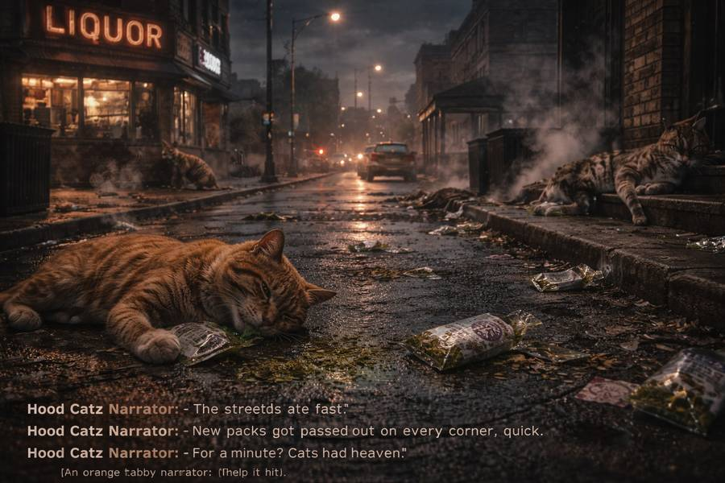
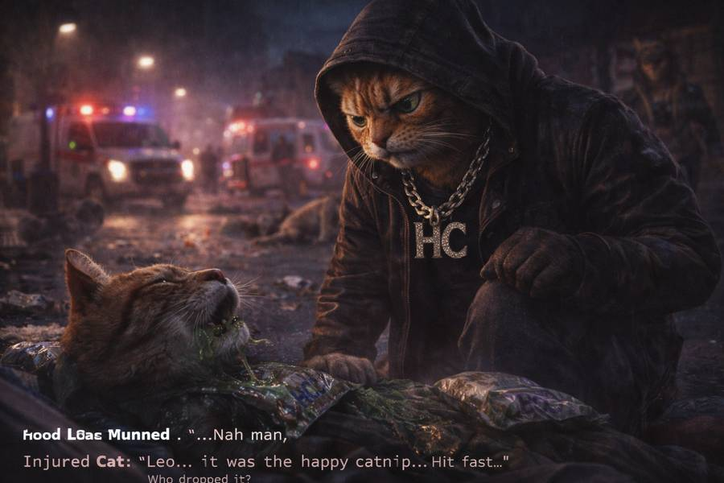
Chapter 2 — The Fallout
By the time the ambulances rolled up, nobody on the block was calling it an accident anymore. Somebody made a choice. The block wanted to know who.
Chapter 3 — The Cut
Deep in a back alley, the SD Rats were cutting HC's own product with something that was never meant to be smoked — bagging it up and sending it right back out under the same name.
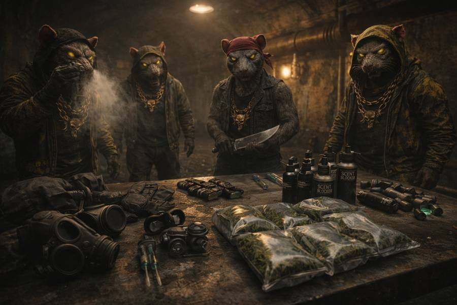
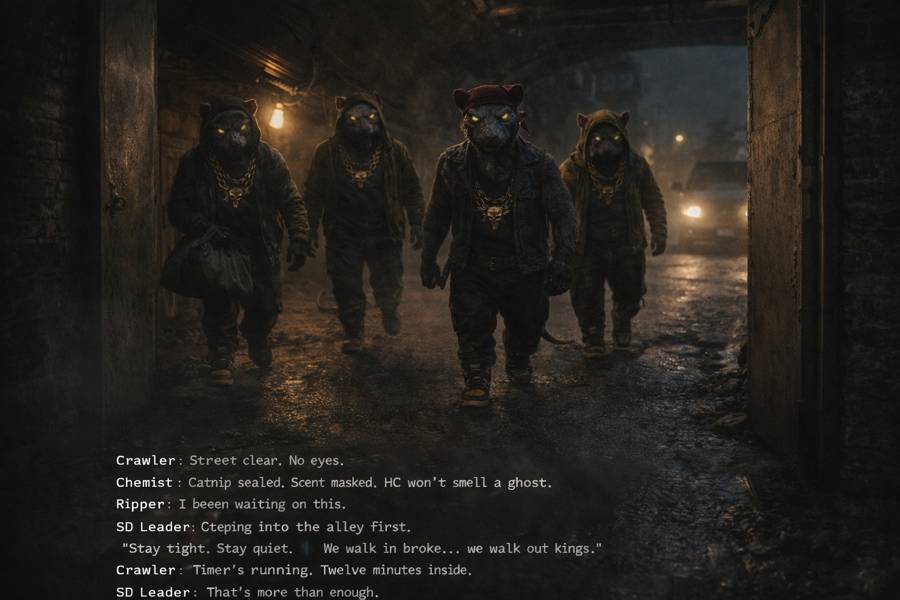
Chapter 4 — The Move
Quiet, careful, in and out before sunrise — the SD Rats knew exactly what they were risking if HC caught them moving through the alley uninvited.
Chapter 5 — The Proof
Empty HC crates turned up stamped and re-sealed — proof the Rats hadn't just poisoned a batch, they'd stolen the name to do it.
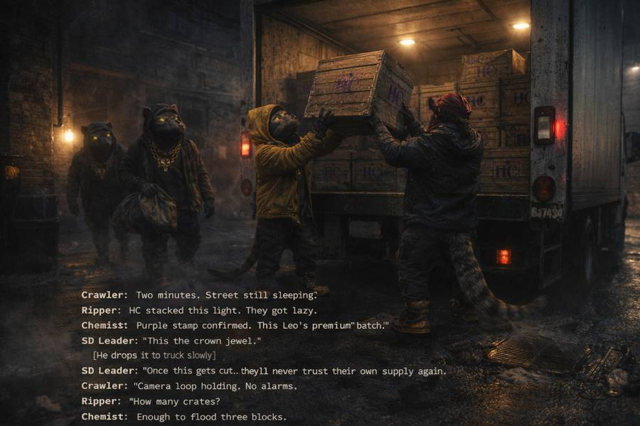
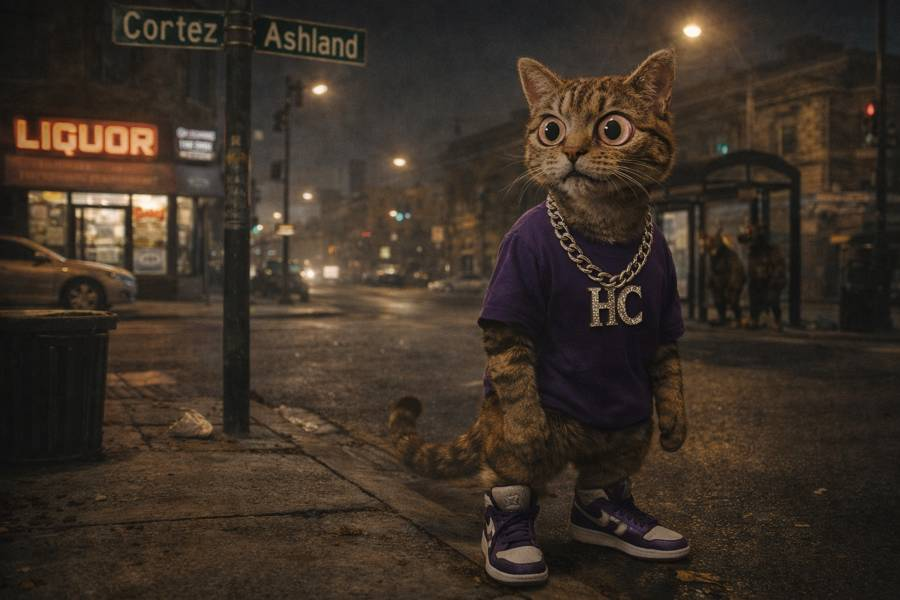
Chapter 6 — Leo Finds Out
Leo doesn't raise his voice. He didn't raise it here either. He just went quiet in a way that scared the crew more than shouting would have.
Chapter 7 — The Alliance
Word spread past HC fast. Other crews started asking questions of their own — and started picking sides.
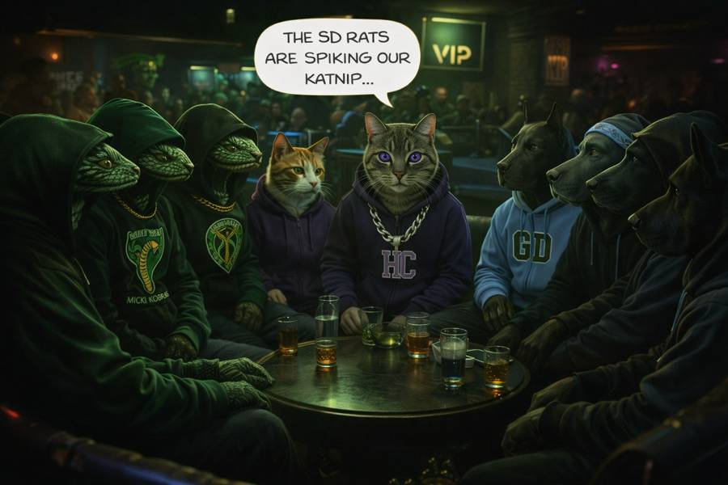
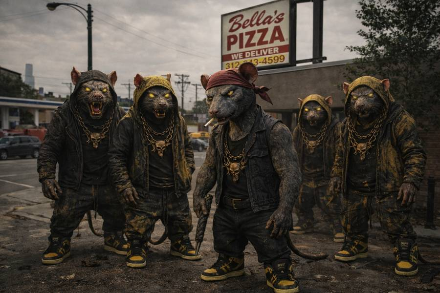
Chapter 8 — The Enemy
Not a rumor, not a rival crew playing tough — an organized outfit that had been planning this for longer than anyone on the block realized.
Chapter 9 — The Standoff
No ambush, no sneaking. Leo walked the crew right up the block and let the Rats see them coming.
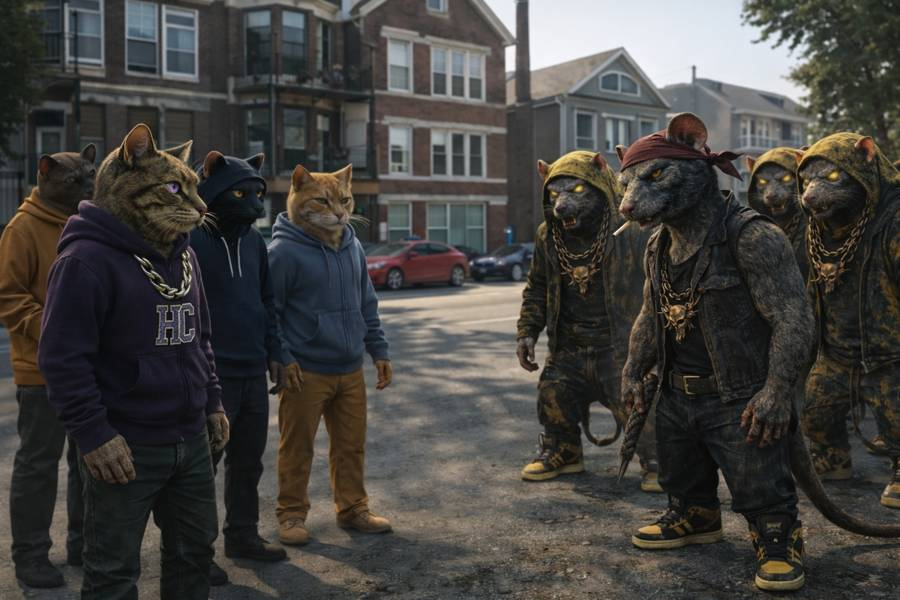
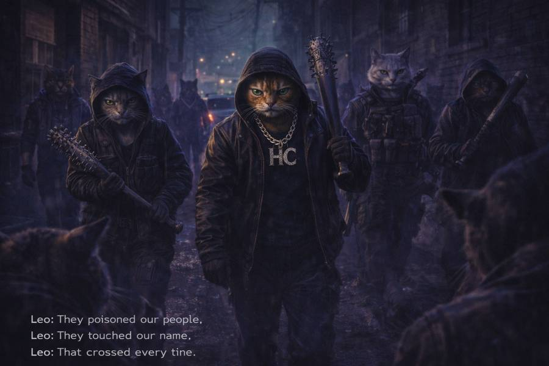
Chapter 10 — The Line
Leo's rule had always been simple: protect the block, don't start what you can't finish. The Rats made that decision for him.
Chapter 11 — The Rally
No speeches, no hype. Just Leo, a map of the block, and a plan nobody was going to talk him out of.
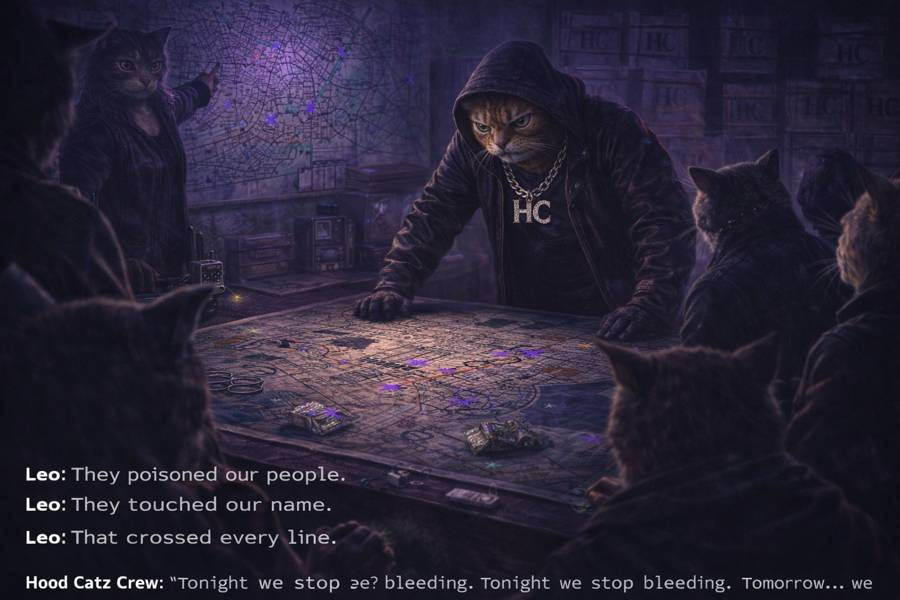
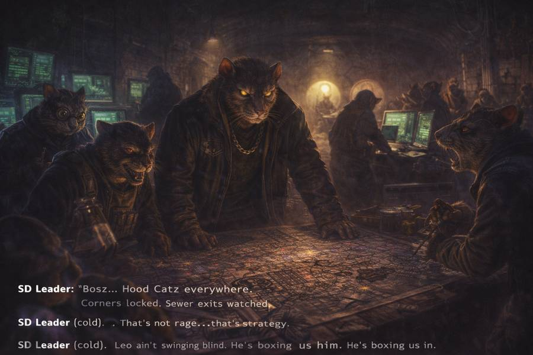
Chapter 12 — Closing In
By the time HC reached the hideout, there was nowhere left for the Rats to run it back to.
Chapter 13 — The Clash
Whatever peace the block had before, it wasn't walking away from this night the same.
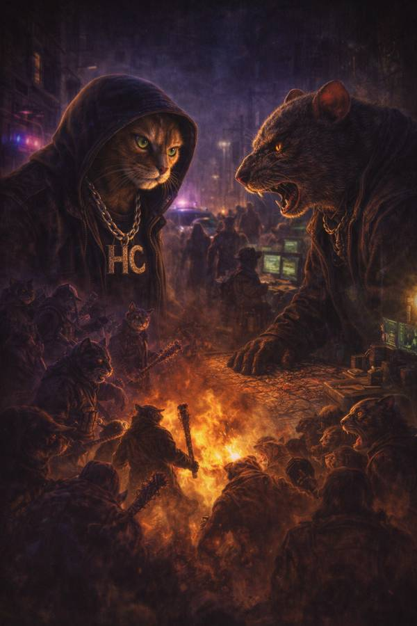
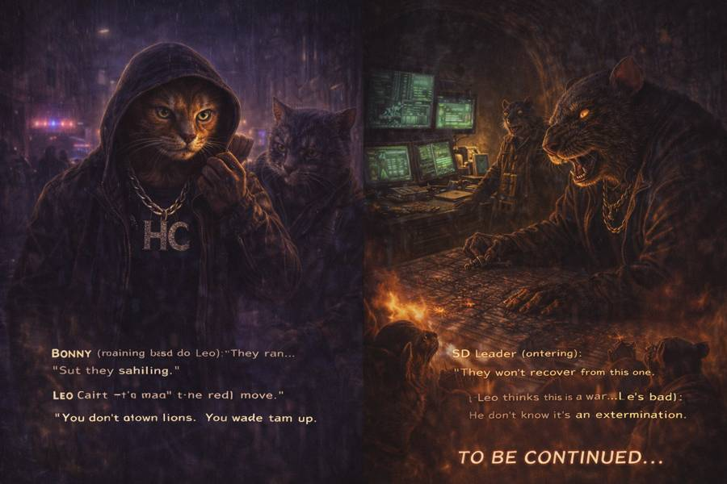
To Be Continued
Episode Two picks up where the block's peace ran out.